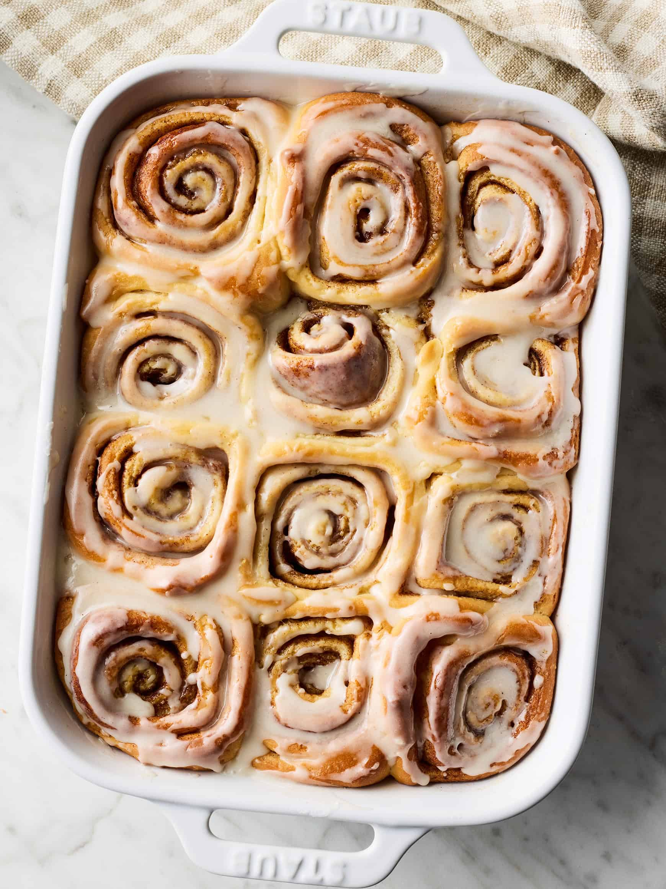
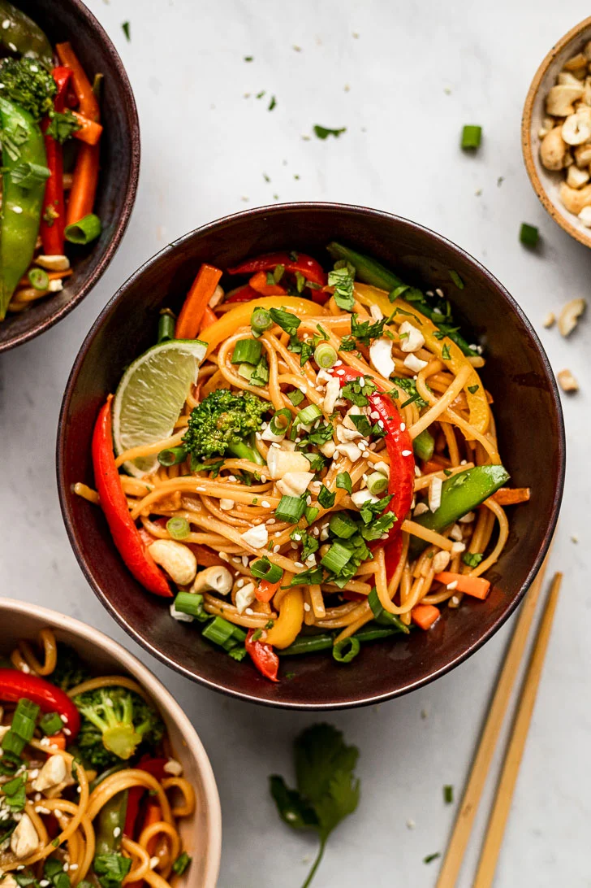
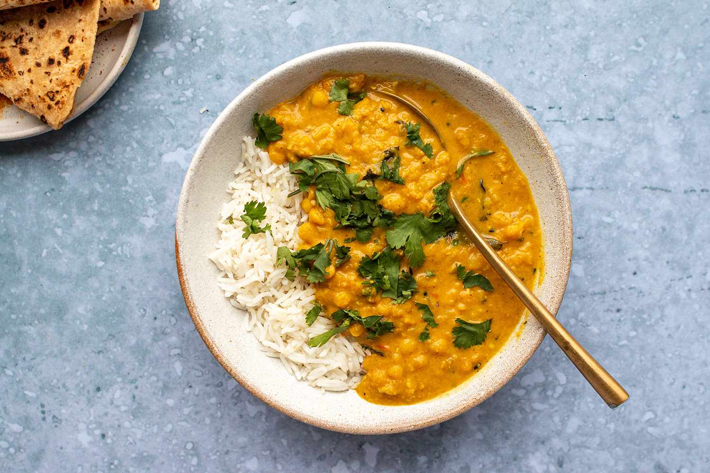
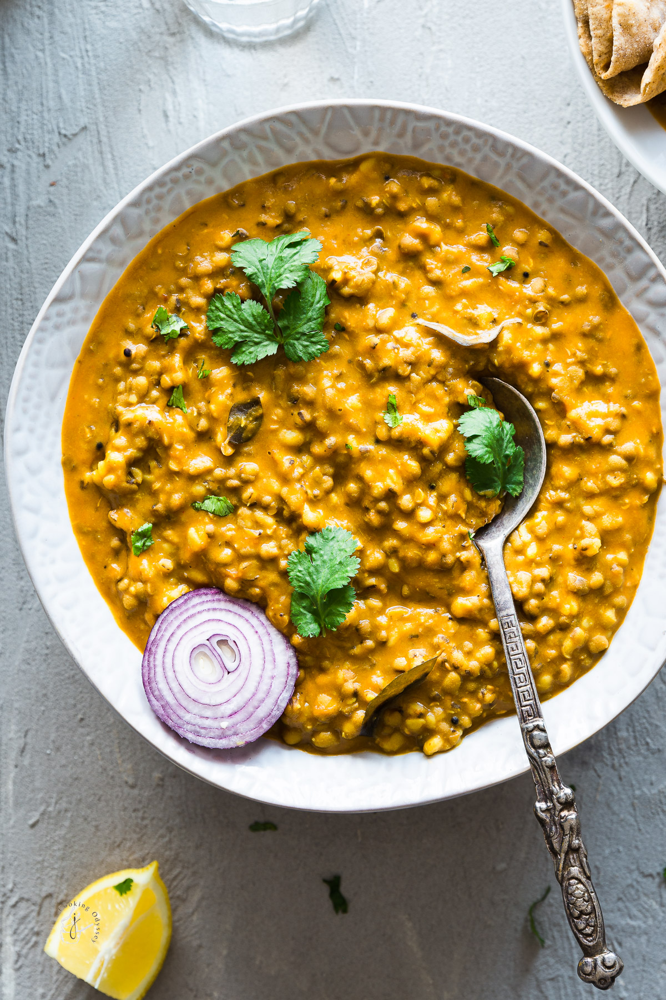

Paw Bhaji
Indian
A popular Indian street food dish made with mashed vegetables and spices, served with buttered bread rolls.
View Recipe
Enchiladas
Mexican
A traditional Mexican dish consisting of rolled tortillas filled with various ingredients and topped with a savory sauce.
View Recipe
Cinnamon Rolls
Dessert
Soft and fluffy cinnamon rolls topped with a sweet glaze, perfect for breakfast or dessert.
View Recipe
Stir Fry Noodles
Asian
A quick and easy stir fry noodle dish with vegetables and a savory sauce.
View Recipe
Bhinda
Indian
A traditional Indian dish made with okra and a blend of spices, cooked to perfection.
View Recipe

Suji Siro
Dessert
A traditional Indian dessert made with semolina, ghee, and sugar, flavored with cardamom and garnished with nuts.
View Recipe

Mug
Indian
A traditional Indian mug recipe, perfect for a quick and easy single serving.
View Recipe